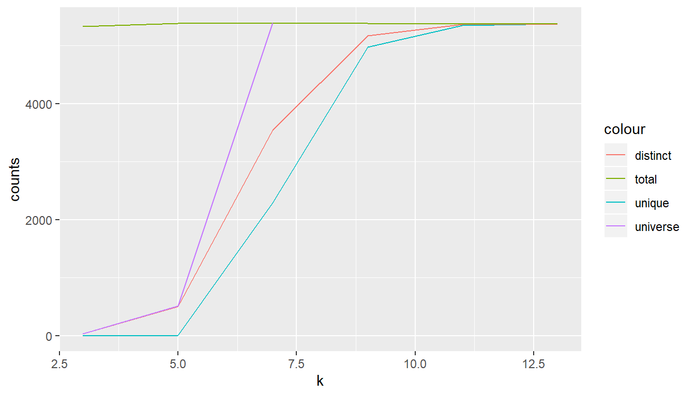
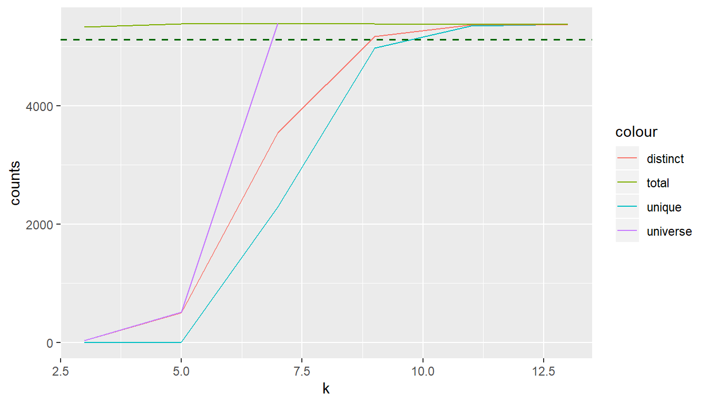

What Are K-mers?
K-mers are DNA sequences of length k. The can be generated by moving along a mother- or template DNA in steps of 1. For k = 1 - the shortest - this equals the set of nucleotides A, C, G, and T. Other well-established k-mers include dimers and trimers. Here we are interested in longer k-mers typically in the range from k > 3 to k-mers of lenght < 100 or also occasionally longer.
What are they good for?
K-mers have found a variety of applications. Particularly interesting is their use as fingerprints at different levels of resolution. In metagenomics, for example, the mixed sample of DNA from a host of organsims is typically annotated with species labels by screening against a database of k-mer signatures.
Main challenges
A major challenge is to decide on a minimal k-mer size that still is capable to support the envisioned application. The longer the k-mers become the more combinations are possible and so an index in a database will become very big or too big. Along with this, the time to create and consult the database will increase. While this can be remedied to a certain extent with parallel computing, it is still desirable and cheaper, to keep the k-mer size small.
Due to the many still unknown factors in genome biology it is yet not possible to calculate exactly how many distinct k-mers to expect for a certain k and a given species. In general we expect, with increasing k to have more unique k-mers. We also expect, that within a species the unqiue k-mers are limited.
In principle, it is possible to heuristically estimate the total number of k-mers, the distinct, and the unique k-mers by systematically scanning a genome for a certain k range. Experience has shown that it is convenient to only consider kmers of of uneven numbers.
Here, the example of the virus phix174 (the first sequenced organism) shows the principle following a blogpost here(x). Another wording is, to evaluate the genomic response to changes in k.
Genomic Response of Phi x 174
This package contains the full sequende of PhiX174 from NCBI.
library(kmerize)
library(ggplot2)
library(magrittr)
# Getting a genome
fa <- system.file("testdata/phix174.fasta",
package = "kmerize")
phix_length <- kmr_length_fasta(fa)
phix_length
#> [1] 5386
# Setting an output file in a temporary directory since this is for demo
out_file <- file.path(tempdir(), "phix174")
# here we create a sequence of k in steps of 2
k <- as.integer(seq(3, 21, 2))
phix_response <- kmr_response(fa, k)
#> C:/Users/Reinhard/AppData/Roaming/WUR/kmerize/tools/kmc3/kmer_counter.exe -k3 -m12 -fm -ci0 -cx1000000000 -cs255 -n255 -t4 D:/apps/R/R-3.6.1/library/kmerize/testdata/phix174.fasta C:/Users/Reinhard/AppData/Local/Temp/RtmpkN1yJS/phix174 C:/Users/Reinhard/AppData/Local/Temp/RtmpkN1yJS/_kmer
#> 5
#> C:/Users/Reinhard/AppData/Roaming/WUR/kmerize/tools/kmc3/kmer_counter.exe -k5 -m12 -fm -ci0 -cx1000000000 -cs255 -n255 -t4 D:/apps/R/R-3.6.1/library/kmerize/testdata/phix174.fasta C:/Users/Reinhard/AppData/Local/Temp/RtmpkN1yJS/phix174 C:/Users/Reinhard/AppData/Local/Temp/RtmpkN1yJS/_kmer
#> 7
#> C:/Users/Reinhard/AppData/Roaming/WUR/kmerize/tools/kmc3/kmer_counter.exe -k7 -m12 -fm -ci0 -cx1000000000 -cs255 -n255 -t4 D:/apps/R/R-3.6.1/library/kmerize/testdata/phix174.fasta C:/Users/Reinhard/AppData/Local/Temp/RtmpkN1yJS/phix174 C:/Users/Reinhard/AppData/Local/Temp/RtmpkN1yJS/_kmer
#> 9
#> C:/Users/Reinhard/AppData/Roaming/WUR/kmerize/tools/kmc3/kmer_counter.exe -k9 -m12 -fm -ci0 -cx1000000000 -cs255 -n255 -t4 D:/apps/R/R-3.6.1/library/kmerize/testdata/phix174.fasta C:/Users/Reinhard/AppData/Local/Temp/RtmpkN1yJS/phix174 C:/Users/Reinhard/AppData/Local/Temp/RtmpkN1yJS/_kmer
#> 11
#> C:/Users/Reinhard/AppData/Roaming/WUR/kmerize/tools/kmc3/kmer_counter.exe -k11 -m12 -fm -ci0 -cx1000000000 -cs255 -n255 -t4 D:/apps/R/R-3.6.1/library/kmerize/testdata/phix174.fasta C:/Users/Reinhard/AppData/Local/Temp/RtmpkN1yJS/phix174 C:/Users/Reinhard/AppData/Local/Temp/RtmpkN1yJS/_kmer
#> 13
#> C:/Users/Reinhard/AppData/Roaming/WUR/kmerize/tools/kmc3/kmer_counter.exe -k13 -m12 -fm -ci0 -cx1000000000 -cs255 -n255 -t4 D:/apps/R/R-3.6.1/library/kmerize/testdata/phix174.fasta C:/Users/Reinhard/AppData/Local/Temp/RtmpkN1yJS/phix174 C:/Users/Reinhard/AppData/Local/Temp/RtmpkN1yJS/_kmerGenomic Response Table
The convenience method for the genomic response returns a summary table. This includes also the theoretical maximum number of k-mers (the k-mer universe) for each value of k.
The resulting table shows only values up to 13. This is because currently, it stops once the number of unique k-mers equals (exactly more than .9999) the distinct k-mers. This means, at and after this k value all k-mers have become unique.
knitr::kable(phix_response)| k | unique | distinct | total | universe |
|---|---|---|---|---|
| 3 | 0 | 32 | 5328 | 32 |
| 5 | 10 | 506 | 5382 | 512 |
| 7 | 2295 | 3547 | 5380 | 8192 |
| 9 | 4972 | 5170 | 5378 | 131072 |
| 11 | 5346 | 5361 | 5376 | 2097152 |
| 13 | 5374 | 5374 | 5374 | 33554432 |
Genomic Response Graph
Plotting this table shows the following response curve:
p <- kmr_plot_response(phix_response, max_y = phix_length)
p
#> Warning: Removed 3 rows containing missing values (geom_path).
Now the curves for the unique and distinct k-mers follow an S curve or power law curve with diminishing response in variability (distinct / unique) as k increases. At around 95% there seems to be a distinct land mark.
It could be an example of the 95/5 rule going back to Deming: He argued that 95% of an organization’s performance depends on the quality of the system, and that only 5% is attributable to the actions of discrete individuals. In analogy, one could expect that most of an organisms makeup is needed for basic house keeping and maybe 5% are interesting ‘diversity’.
#> [1] 5112.9So, this cutoff value can be added to the graph as follows:
p <- p +
geom_hline(yintercept = k_lim, linetype = "dashed", color = "darkgreen", lwd = .6)
p
#> Warning: Removed 3 rows containing missing values (geom_path).
p <- kmr_plot_response(phix_response, max_y = phix_length, limit = lim)
p
#> Warning: Removed 3 rows containing missing values (geom_path). And the corresponding k value can be extracted with the following function:
And the corresponding k value can be extracted with the following function:
Convencience Graph Options
The plot function includes options to automatically show a k cutoff corresponding to a certain limit and also to set a maximum limit for y axis.
```{ plot3r}
p <- kmr_plot_response(phix_response, limit = lim, max_y = phix_length) p ```